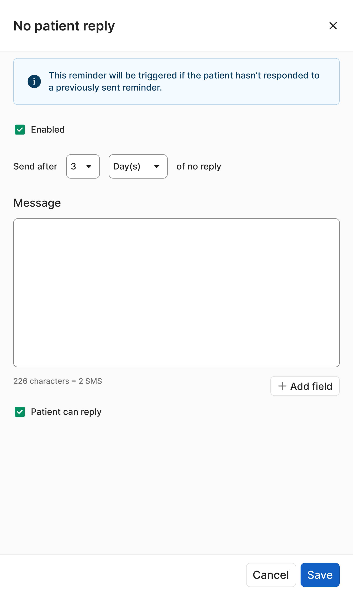
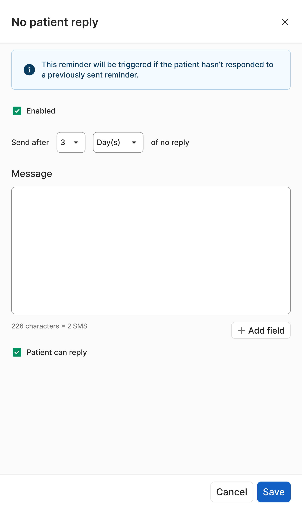

Helix patient communications
Summary
At Telstra Health I redesigned the patient communication system for the doctor’s practice management software Helix. This automated processes for practices, delivered a safe and reliable experience and drove revenue
Impact of the re-design
90% + of practices increased usage of messaging system
The updated messaging system allowed messages to be sent in more situations with more customisation
15-20 hours of admin work saved per week
Automation of patient communications left more time for practice staff to focus on patient care
Corporate client with 150 + practices was retained
The client extended their contract after successful delivery of this project
Client with 150 + practices was at risk of churning
Major corporate client was at risk of churning
They were having trouble ensuring patients attended their appointments, as their practices dealt with at-risk youth patients this was essential for them
Customers were finding other solutions for patient communications
Our users were not using the native messaging system to send messages, rather they were either using other systems, or managing it manually. As practices pay per message sent, increasing the usage of the patient communication system drove revenue for the company
Aligned with product vision
A key market differentiator of the Helix product is its cloud infrastructure and automation capability in a market that is still primarily dominated by on-premises software
Why patient communications is so important for practices

Medico-legal compliance

Deliver effective care
Communication channels
Patients rely on communications channels to schedule, confirm and attend appointments as well as to receive information and results
Burden of care
Practices have a burden of care to ensure that at risk patients attend their consults and can be liable if they don’t
Attending appointments
Ensuring patients attend appointments and avoiding no-shows maximises revenue and makes the most use of the scarce availability of doctors

Maximise revenue
User research
9
Participants

Youth Mental Health
Semi-structured interviews
General Practitioners
Overview
We wanted to dive deep into the attitudes, behaviours and goals of practices around patient communications through users interviews
What we wanted to understand
- The reasons practices were contacting patients, at what point in the consult and what they were sending
- Different requirements for general practitioners, specialists and youth mental health
- When are practices sending messages to individual patients or groups
1
Hour
Specialists

Understanding the communications process showed areas to target for improvement
summary
Through user research, workshops and consulting with subject-matter experts, the process could be mapped out and key insights about the area could be established
A large amount of messages sent were tied to appointments
Booking an appointment, reminding patients of appointments and billing follow-ups are important patient communication occasions
Patient no-shows hurt practice revenue
Ensuring patients attend their appointments maintains practice revenue and avoids wasting doctor’s time
Patient communications is time consuming
Although tedious and time-consuming, ensuring it is done effectively has consequences for patient care and medico-legal obligations
Different patients groups require different levels of communications
Vulnerable patient groups such as those with chronic conditions or young patients require ongoing and detailed communications

Where Helix was falling short
summary
Areas were identified where Helix was not adequate for practice needs. In the current state practices were resorting to calling patients manually, a huge administrative burden that’s difficult to document.

Dealing with high risk patients
For some practices ensuring patients were prepared for and attended the consult was incredibly important such as youth mental health practices with high risk patients
Dealing with appointments made far in advance
For specialist practices appointments were often made many months in advance and were difficult to reschedule, patients needed to be reminded at a longer timeframe to prepare and be able to keep a record
Current system was too inflexible leading to low uptake
With only one text sent for all appointments, the current system didn’t have the flexibility to address all situations required of our diverse user base
Design direction
summary
Speaking to our users there were three key flows when practices needed to communicate with patients that guided the design direction
Messaging groups
Appointment reminders
Messaging individuals
Three goals for design phase
- Reduce time spent by automating and streamlining where possible
- Messaging must accommodate when and how often practices could contact patients
- Accommodate for flexibility


Appointment reminders
summary
So much of what practices wanted to send was appointment based, so an automated messaging system for patients was created
Why appointment reminders
- Tying messaging to patient appointments allows practices to “set and forget”
- Customisation allows practices to send different messages based on appointment types and practitioners
- Is a key way to ensure that patients attend consults

Appointment reminders dashboard
Provides overview of reminders that have been set and their details
- When they are sent
- Appointment types
- Practitioners
- If patient can reply
- If it’s enabled or disabled
There are four categories of appointment reminders
- Appointment status
- Before appointment
- At time of booking
- After appointment
Adding a new appointment reminder

When to send reminders
User research indicated three important situations for sending reminders
- Before appointment
- At time of booking
- After appointment
Send for different practitioners and appointment types
This allows the practices to set up messages for specific scenarios and situations, allowing automation to a greater degree
Special case appointment reminders
summary
So much of what practices wanted to send was appointment based, so an automated messaging system for patients was created

 

Rescheduled appointment
- Sent when an appointment is rescheduled by the practice
- Informs patients of the updated details
Declined appointment
- Sent when the patient declines the appointment
- This is to confirm that the patient will not attend the appointment
No Patient Reply
- Sent if a patient hasn’t responded to a previously sent reminder to confirm an appointment
- Feedback from users noted this as a particularly important situation for the practice
Did not attend
- Triggered if a patient does not attend an appointment
- Allows practices to follow up for a cancellation fee or re-book
Design challenges
Adding in ‘enabled’ checkbox
- Practices wanted the ability to ‘turn off’ appointment reminders without deleting e.g. vaccine reminders during flu season
- The ‘enabled’ checkbox was added to accommodate this
Simplifying information architecture of fields
- Multiple iterations of the number of fields and their relationship to each other were tested with users
- Having more, interconnected fields was confusing for users
- For the final design only ‘Practitioner’ and ‘Appointment type’ remained
Choosing between cards or table layout
- Tables presented were more information dense and are better for comparing values
- Cards allow user to see info for a single reminder easier which was more appropriate for this situation so this was chosen
Determining card design
- The card component in the design system had limited options
- Many iterations of the cards were made to determine how best to display the necessary information
- Listing the number with icons meant that the cards were easily scannable
Outcomes
summary
Key objectives from this project were achieved including increased usage of messaging system, preventing client churning and positioning Helix as a leader in automated messaging
Prevented corporate client churning
A large client received early access to beta and renewed their contract with the software due to the new functionality
Positioned Helix as market-leader in automated messaging
The newly built messaging system allowed messages to be sent out in more situations with more customisation than our competitors
Higher usage of messaging system
Beta customers reported utilising Helix messaging more with the new system
Learnings
summary
This project was undertaken on short notice and was high priority so the project was adapted to these circumstances. This resulted in important learnings for this situation

Importance of co-design
Consistent contact with users through all stages of this project was essential for its success
Pushing to address design debt
Working around design debt and legacy design systems made design significantly more difficult - dedicating time for this would've improved the outcome

Staggering design into stages
Time constraints necessitated staged design phases, however this resulted in a less cohesive product in the end